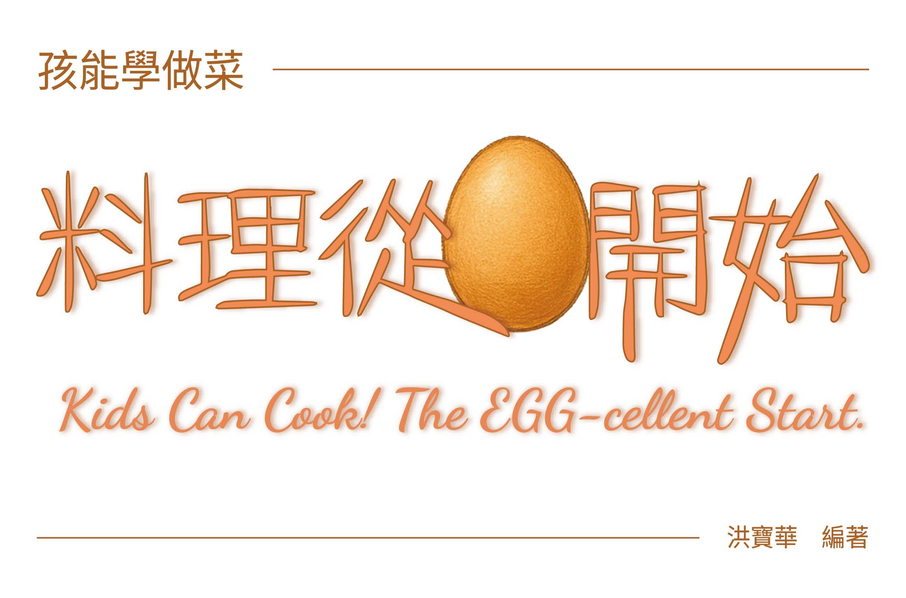

《孩能學做菜──料理從蛋開始》是一本專為 9–12 歲孩童設計的生活教育圖書，以台灣經典蛋料理為教材，培養孩子的生活自理能力。完整企劃涵蓋圖書設計、AI 生圖插圖、宣傳影片製作及社群廣告文案，並提供免費電子書供線上閱讀或下載列印。宣傳影片
社群文案
📘 免費閱讀與下載｜適合9–12歲孩子的生活教育圖書
🥚煎第一顆蛋，學會第一份自理。
你也曾想過，孩子該從什麼時候開始學會照顧自己的一餐嗎？
其實，不需要高難度技巧，也不用準備一堆材料——
只要從冰箱裡那顆熟悉的蛋開始，就能教會孩子最實用的生活能力。
—
📗《孩能學做菜──料理從蛋開始》
Kids Can Cook! The EGG-cellent Start.
這是一本專為9–12歲孩童設計的生活教育圖書，內容包含：
✔ 認識食用蛋，學會分辨新鮮與否
✔ 用臺灣經典蛋料理當教材（如菜脯蛋、蛋花湯、滷蛋等）
✔ 提供簡單、安全又美味的食譜，適合親子一同動手做
—
💡最棒的是，這本書完全免費！
✨ 可直接線上閱讀，也能下載列印，陪孩子一起翻翻看
✨ 材料家裡就有，操作步驟淺顯易懂，不增加家長負擔，只留下珍貴的親子共學時光
📥【點擊下方連結或掃描影片結尾 QR Code，立即免費閱讀】
https://heyzine.com/flip-book/c81d93fe9d.html
—
📚 電子書功能貼心設計：
🔹 目錄互動：點選即可跳轉各章節
🔹 書籤標記：可自行標記重要頁面
🔹 PDF下載：永久保存，自由列印
🔹 文字查找：快速搜尋感興趣內容
—
歡迎和孩子一起，從一顆蛋開始，學會生活的第一課。🥚✨
電子書
支援目錄跳轉、書籤標記、PDF 下載、文字查找． 開新分頁閱讀